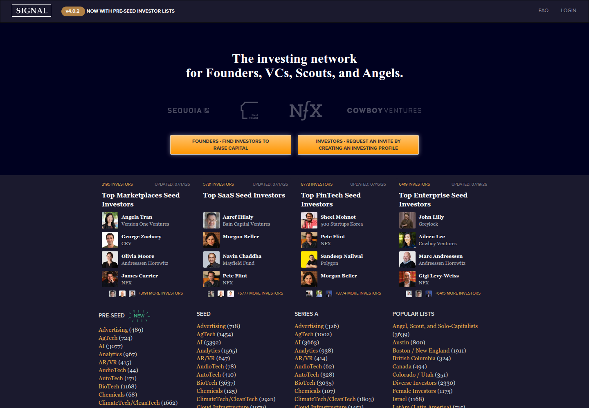
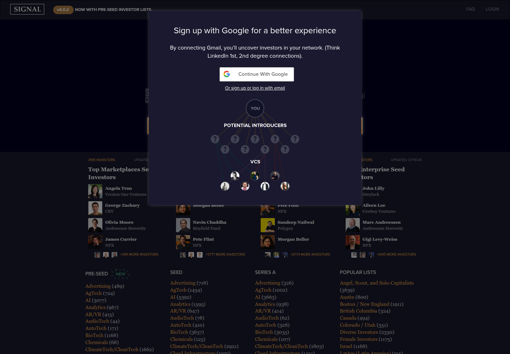
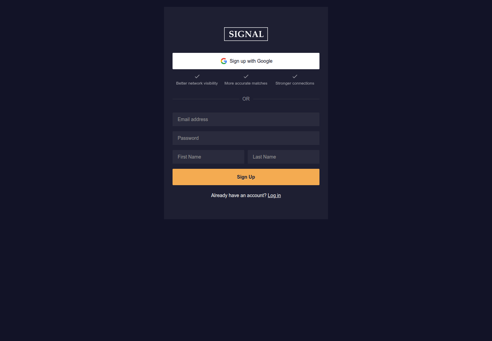

Profile
- Company
- Signal (NFX)
- Url
- https://signal.nfx.com/
- Source Category
- Capital & discovery marketplaces
- Research Status
- Deep Cited Research / Draft Complete
- Current Status
- live - active NFX Signal investor network with investor lists updated July 2026.
- Founded Launch Year
- 2017 terms/service baseline; VC Match launched 2019; Signal 4.0 launched 2020
- Company Age
- 9 years from 2017 terms baseline
- Hq Country
- US/Israel VC roots; exact Signal HQ not separately applicable
- Operating Area
- Global investor discovery with categories by geography/stage/sector; NFX invests US, Israel, Latin America, Europe
- Target Users
- Founders raising capital; VCs, scouts, angels requesting investing profiles; NFX-backed founders via The Guild
- Product Category
- founder-investor / capital; investor discovery network; warm-intro facilitation
Product Flows
- Swipe Card Interface
- no
- Mutual Match
- not found
- Ai Matching Scoring
- yes - investor search/fit by sector, stage, quality
- Ai Deck Scoring
- not found
- Founder To Founder Flow
- no
- Founder To Investor Flow
- yes - target lists and intro network
- Project Profiles
- yes - investor/founder profile flows
- Messaging Collaboration
- yes - Gmail/network intro and CRM tracking
- Mobile App
- not found
- Web App
- yes
Security & Documents
- Nda Gated Unlock
- no
- Data Room
- no
- E Signature
- no
- Meeting Prep Ai Briefing
- not found
Pricing, Funding & Traction
- Pricing Model
- 100% free; NFX says it will never charge for Signal
- Business Model
- free NFX software/community product supporting NFX founder ecosystem and deal/network intelligence
- Total Funding
- not applicable/not found - internal NFX product
- Funding Rounds
- not applicable/not found
- Investors
- NFX
- Funding Source Type
- corporate/VC internal product
- Last Funding Date
- not applicable
- Users Traction
- login page shows investor category counts updated July 15-16 2026; NFX site says 322k+ founders newsletter and 7 software products; Signal FAQ says tens of thousands of founders monthly
- Deals Funding Facilitated
- not found
- Partnerships
- NFX platform; The Guild network has 500+ founders per NFX about page.
- Media Coverage
- not found
- Product Update Activity
- Investor lists updated July 15-18 2026.
- Acquisition Rebrand History
- Signal expanded with VC Match in 2019 and Scouts & Angels/Signal 4.0 in 2020
Scores
- Product Overlap Score
- 3
- Feature Maturity Score
- 3
- Market Traction Score
- 3
- Funding Strength Score
- 1
- Ai Depth Score
- 3
- Nda Security Strength Score
- 1
- Network Moat Score
- 3
- Direct Threat Score
- 2.2
- Source Confidence
- High
Evidence Notes
- Primary Sources
- https://signal.nfx.com/faq
https://signal.nfx.com/login
https://signal.nfx.com/terms
https://www.nfx.com/
https://www.nfx.com/about
https://www.nfx.com/post/announcing-vc-match
https://www.nfx.com/post/announcing-scouts-and-angels - Secondary Sources
- not found
- Unsupported Claims
- No verified source found for AI scoring, deck scoring, data room, e-signature, mobile app, or funding metrics.
- Contradictions
- Investor counts vary by selected category/list, not a single total network count.
- Last Checked
- 2026-07-19
- Notes
- Important investor-discovery competitor; login likely required for full intro/messaging flow.
Registration Flow
Research date: 2026-07-19. Screenshots are sanitized public copies from the private registration-flow capture set; credentials, tokens, verification links/codes, browser chrome, and private identifiers are not intentionally published.
Outcome: stopped at required truthful-details / submission boundary.
Stop point: Blank direct-email Sign Up form, before entering identity or credential data, submitting Sign Up, creating an account, or requesting email verification
Blocker / boundary: Signal's direct-email sign-up form requires first name and last name in addition to the authorized email and site-specific password. Those truthful identity details were not supplied in the authorized credential file, so they were not guessed or entered and the account form was not submitted.
- Official public homepage. Signal's official public page describes itself as an investing network for founders, VCs, scouts, and angels. It presents separate founder and investor entries: founders can find investors to raise capital, while investors can request an invite by creating an investing profile.
- Founder authentication method selection. The founder entry opens an authentication dialog that promotes Continue With Google and provides a direct 'sign up or log in with email' alternative. The dialog says connecting Gmail can reveal investors in the user's network. Google OAuth was not opened because direct email registration was available and connecting Gmail was unnecessary.
- Direct-email sign-up form and stop point. The email path opens Signal's sign-up form. It offers Google sign-up plus direct fields for email address, password, first name, and last name, followed by a Sign Up button and a link for existing users to log in. The form was left blank because truthful first and last names were not present in the authorized credential file.


